Part 7
7.BGM: Okay, Everyone!
Strap in, boyos, this update's a long one.

It was a threeway tie between Yuri, Natsuki, and Monika - or at least it was until that last minute vote
 . Before that, the only thing you all can agree on is not Sayori.
. Before that, the only thing you all can agree on is not Sayori. 
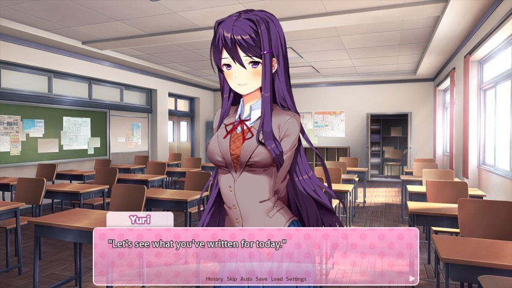
 : "...": "......"
: "...": "......"Yuri stares at the poem with a surprised expression on her face.
 : Do you...like it?": "Mitayo...this one might even be better than yesterday's. How did you even pick up on this so quickly...? Just yesterday, I was telling you the kind of techniques worth practicing...": Maybe that's why...you did a good job explaining. I really wanted to try giving it more imagery."
: Do you...like it?": "Mitayo...this one might even be better than yesterday's. How did you even pick up on this so quickly...? Just yesterday, I was telling you the kind of techniques worth practicing...": Maybe that's why...you did a good job explaining. I really wanted to try giving it more imagery."Yuri visibly swallows. Even her hands appear sweaty.
There's vomit on her sweater already. Mom's spaghetti, she's nervous.
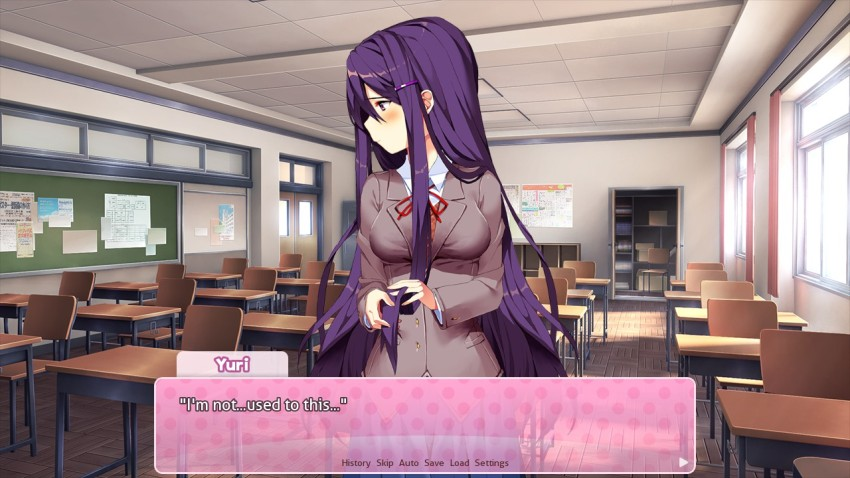
: Used to what?": "I don't know...!": It's fine, take your time..."Yuri breathes and collects her thoughts. I know that Yuri likes to think before she speaks, so I offer that patience to her.
: "Yeah...just...being appreciated like this...I guess. It probably sounds really stupid, but seeing someone motivated by my writing...it just makes me really happy..."I've started deleting some of Yuri's ellipses, but not all of them. I think there were three more sets in that last statement and it didn't flow well at all.
: Are you saying you've never shared your writing before?"Yuri nods.
: Really? I don't believe it.": "I really only write for myself...and besides..."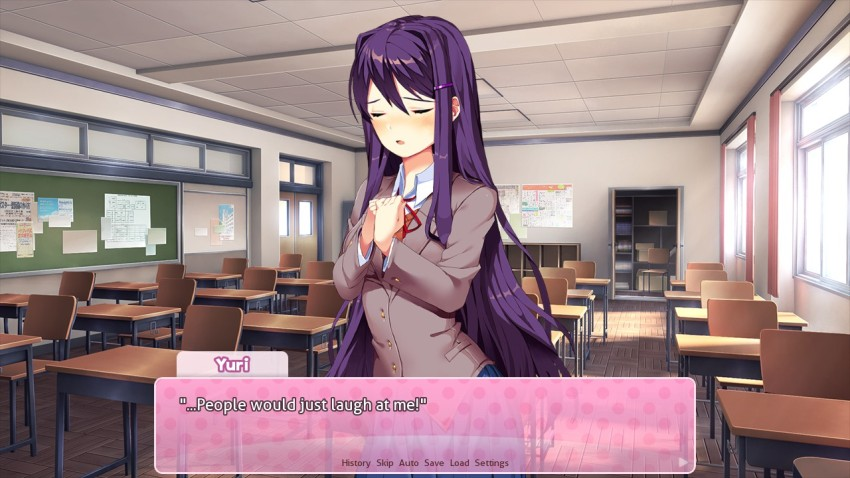
: Do you really think that...?"Again, Yuri nods.
: Huh...even your close friends?": "..."Yuri doesn't respond to that. I wonder why...
I mean, look at how Natsuki responded to her poem yesterday. That was a hot mess - it's no wonder Yuri's a little paranoid...writing is obviously very important to her.
: Anyway...do you want to share the poem you wrote today?": "...Yeah. I do! If it's with you..."BGM: Okay, Everyone! (Yuri)
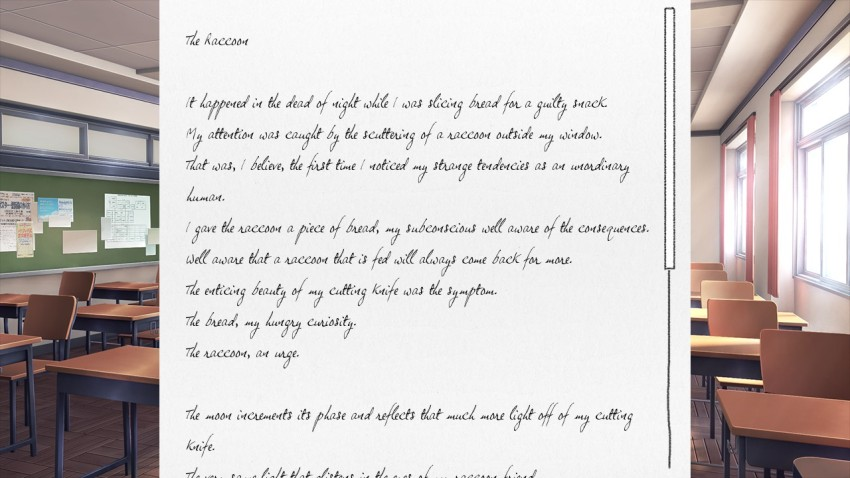
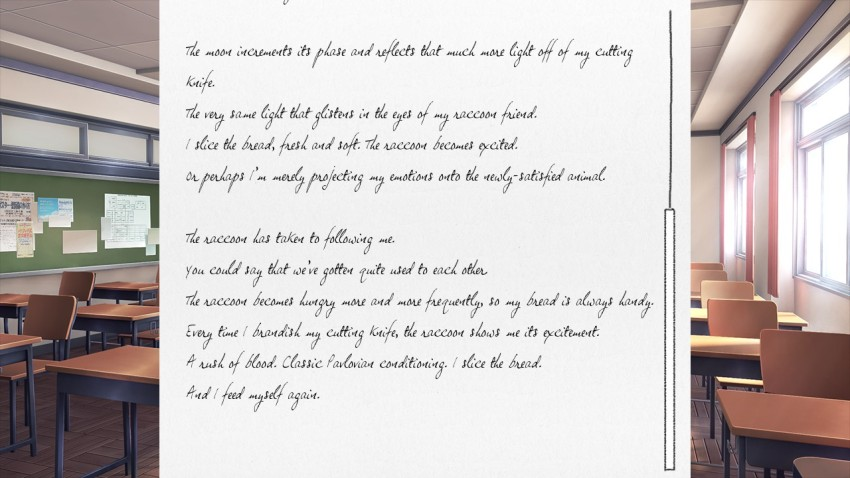
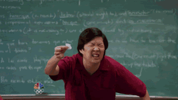
I told you that she wasn't lying about long poems.
quote:
The Raccoon
It happened in the dead of night while I was slicing bread for a guilty snack.
My attention was caught by the scuttering of a raccoon outside my window.
That was, I believe, the first time I noticed my strange tendencies as an unordinary human.
I gave the raccoon a piece of bread, my subconscious well aware of the consequences.
Well aware that a raccoon that is fed will always come back for more.
The enticing beauty of my cutting knife was the symptom.
The bread, my hungry curiosity.
The raccoon, an urge.
The moon increments its phase and reflects that much more light off of my cutting knife.
The very same light that glistens in the eyes of my raccoon friend.
I slice the bread, fresh and soft. The raccoon becomes excited.
Or perhaps I'm merely projecting my emotions onto the newly-satisfied animal.
The raccoon has taken to following me.
You could say that we've gotten quite used to each other.
The raccoon becomes hungry more and more frequently, so my bread is always handy.
Every time I brandish my cutting knife, the raccoon shows me its excitement.
A rush of blood. Classic Pavlovian conditioning. I slice the bread.
And I feed myself again.
Poem impressions: You know, if you feed that raccoon too much, it'll lose its fear of humans and end up seriously hurting someone and that's very irresponsible. That being said, I like this poem - she seems to have lost some of her more flowery language, so perhaps yesterday's argument struck a cord with her.
BGM: Okay, Everyone!
: "Um...I was a little more daring with this one than yesterday's...": I can see that. It's a lot more metaphorical..."I don't know if it's my fault, but I can't begin to imagine what this poem is about.
It's clearly about a raccoon. Weren't you listening?
: "That's right. It's a bit closer to my preferred writing style...using the poem as a canvas to express vivid imagery, and conveying emotions through them.": Yeah, if I take it at face value, then I can't even figure out what it's supposed to mean...": "Well...I think it's something that different people can relate to in their own way. I wanted to express the way it feels for me to indulge in my more unusual hobbies...it's those sorts of things I'm usually forced to keep to myself. So, I sometimes enjoy writing about them."This is an interesting topic that I can't get into at this time, so keep it tucked away for later.
: Why do you keep them to yourself?": "Be...Because...they're embarrassing...and people would make fun of me. Don't you have anything like that, Mitayo?"Does being part of the Literature Club count?
: Well...yeah, I guess I do..."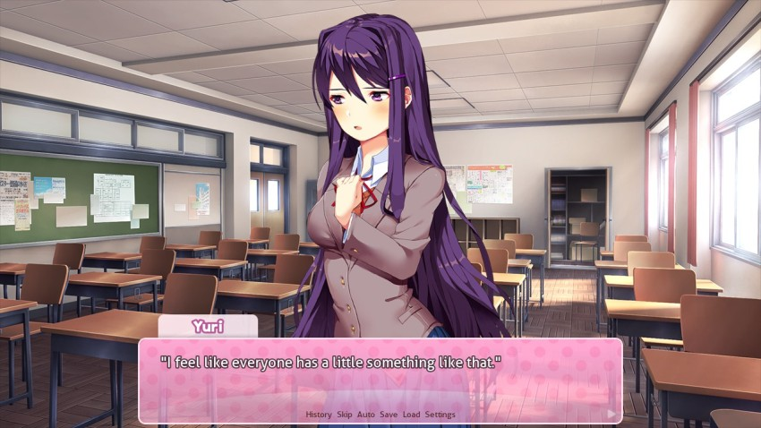
: "The best we can do is respect each other and our individualities. Even if it's difficult sometimes, and some things make us uncomfortable...after all, if I hadn't learned to embrace my own weirdness, I would probably hate myself.": "I-I might be ranting a little bit now...but I'm glad that you're a good listener. You're good at a lot of things...writing, listening...""Sensuously hand feeding me chocolate..."
: "There really aren't many people like you, Mitayo...": Th-That's exaggerating a little bit...": "It's just...how I feel. I never thought I would feel so comfortable sharing my writing...but now, I almost feel like I look forward to it...it's just...a really nice feeling. And you're to thank for that.": It's...it's nothing, really..."Yuri smiles sincerely at me. For just a moment, her timidness seems to disappear.
At the very least, it's nice that we're able to pull Yuri out of her shell a little bit.
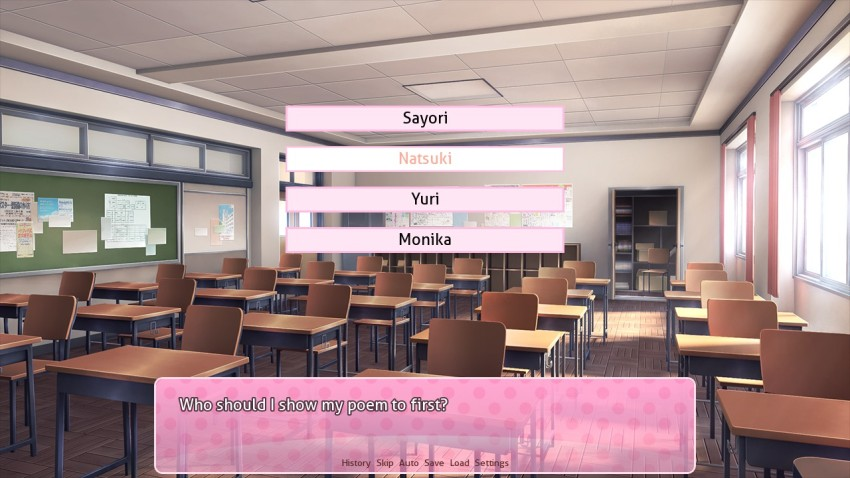

 : "Well, I can admit that it's better than the last one. It's nice to see that you're putting in some effort."
: "Well, I can admit that it's better than the last one. It's nice to see that you're putting in some effort."That might be the nicest thing Natsuki has ever said to us.
: That's good...": "But I still don't like this at all. It's trying too hard to be serious.": Eh? What do you mean by that?": "Poems don't need to be all deep-sounding to express something. It's going to just sound like you're forcing it unless you really don't suck at it. Honestly... Don't bother trying to write poems like this until you're on Yuri's level--"Natsuki stops short all of a sudden.
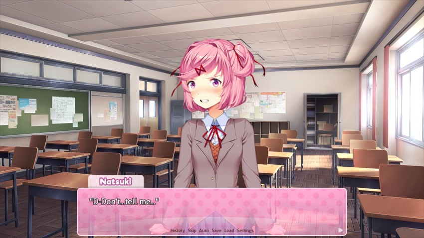
: Eh?": "You're not...you're not just trying to impress Yuri, are you?!": W-What are you talking about?? And keep your voice down...!"I think she knows that we fancy her, Mitayo.
: "You know Yuri would love this kind of...this angsty.......!!": Just because she's a talented writer doesn't mean...I-I mean...": "Uu....!!"Looks like I'm in trouble. I somehow struck a nerve, though what I did is beyond me.
Natsuki shoves the poem I handed her back over to me.
: "Take your stupid poem. If you wrote it for someone else, just don't show it to me!"It's entirely possible that I wrote it for the whole group!
: Ouch..."This is what I get for letting a younger girl step into my business. Unless I was a mind reader, I was destined to be in a world of pain from the start. At least Natsuki wasn't really the girl I was trying to impress in the first place...
No, I didn't forget anything here. Natsuki flat-out doesn't show us her poem. To be fair, if we'd gone with group B words both times, Yuri would be just as closed-off...though she'd be a bit more mature about it.
 : "How's the writing going?": Alright, I guess...": "I'll take that. As long as it's not going bad! I'm happy that you're applying yourself. Maybe soon you'll come up with a masterpiece!"
: "How's the writing going?": Alright, I guess...": "I'll take that. As long as it's not going bad! I'm happy that you're applying yourself. Maybe soon you'll come up with a masterpiece!"Uh, all of my works thus far have been gothic masterpieces, thank you very much.
: Ahaha, I wouldn't count on that...": "You never know! Want to share what you wrote for today?": Sure... Here you go."I give my poem to Monika.
: "...": "It feels like you're not only getting more comfortable with your style...but the imagery is better than the last one I read!": "Just wondering, but have you been finding inspiration in Yuri's writing style?": Hmm...I guess so. You can't deny that she's talented.": "Yeah, totally! I think her poems are the most...romantic. That's the best way to describe it."You do know that she wrote about a raccoon today, right?
: "She's like a totally different person when she picks up a pen...": I noticed that, too. Or when she's talking about literature, it's like a light turns on inside her.": "Mhm! Sadly, it's hard to get much personal conversation out of her..."It's not that she has problems talking, she just has no self-confidence in anything she says or does.
: "Who knows what goes on in that head of hers?": I hope you don't mean that in a bad way.": "No, of course not! I just meant that I wish she didn't keep so much to herself...but still, defending her like that...you must be pretty into her...": Eh?! You...completely misunderstood!"She saw you hand-feeding her chocolate. She didn't misunderstand a thing.
: "Ahaha! Calm down, I'm kidding! Besides, I'm pretty sure she's already got a boyfriend...": Wait, really?: "Yeah. A fictional one, anyway."Monika kind of whispers that last part to me.
: "It's just a hunch, but...": ...Well, there's not really anything wrong with that!"Uh, you sure, bro? I don't think a Reginald Barclay is what you're looking for, Mitayo.
: "Oh, well I know...! I was just saying~ but anyway...you want to read my poem now? I like the way this one turned out, so I hope you do too~": Alright, let's take a look."BGM: Okay, Everyone! (Monika)
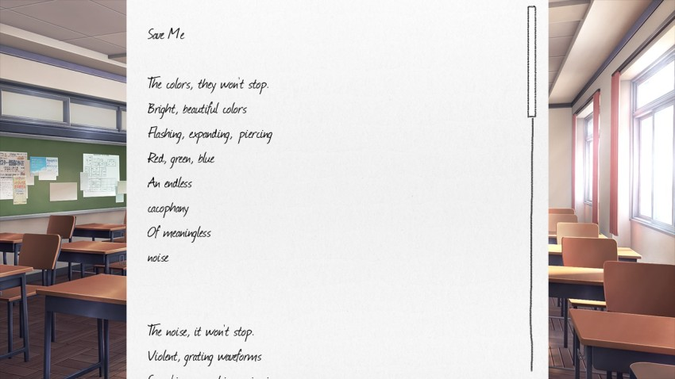
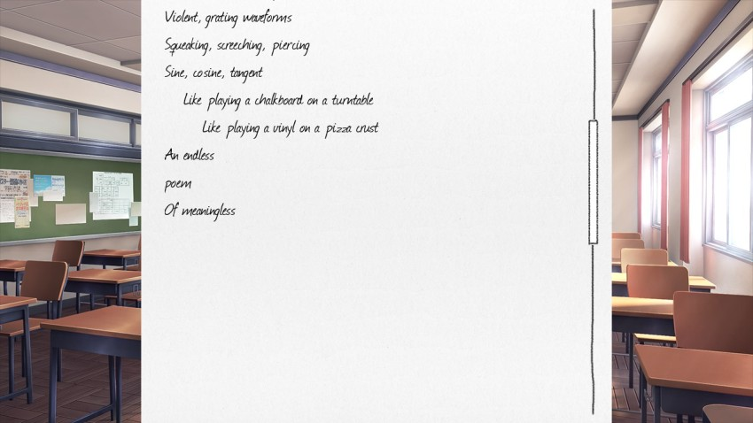
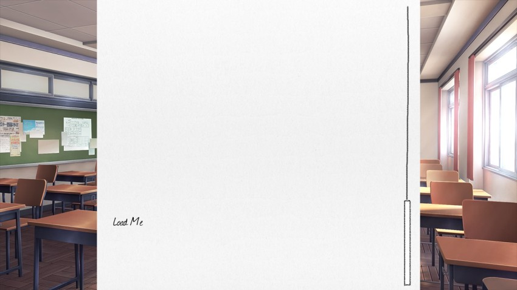
code:
The colors, they won't stop.
Bright, beautiful colors
Flashing, expanding, piercing
Red, green, blue
An endless
cacophany
Of meaningless
noise
The noise, it won't stop.
Violent, grating waveforms
Squeaking, screeching, piercing
Sine, cosine, tangent
Like playing a chalkboard on a turntable
Like playing a vinyl on a pizza crust
An endless
poem
Of meaningless
Load Me
BGM: Okay, Everyone!
: Hm...it's even more abstract than your last one, huh?": "Ahaha...I guess it's just the way I write...I'm sorry if you don't like it."I really wish everyone would stop making assumptions about what I do and do not like.
: No, I never said that. It's just a kind of thing I've never really seen before, I guess.": "I kind of like playing with my space on the paper..."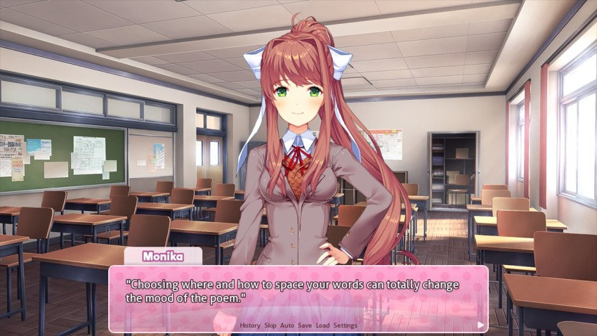
: "It's almost like magic. The way I wrote the lines really short makes it feel like they're trying to speak over the noise."This is the second time this update that writing has been compared to magic.
: I see...it's still hard for me to tell what it's about, though.": "Ahaha. Sometimes asking what a poem is about isn't the right question. A poem can be as abstract as a physical expression of a feeling. Or a conversation with the reader. So putting it that way, not every poem is about something.": "Anyway...": "Here's Monika's Writing Tip of the Day! Sometimes you'll find yourself facing a difficult decision..."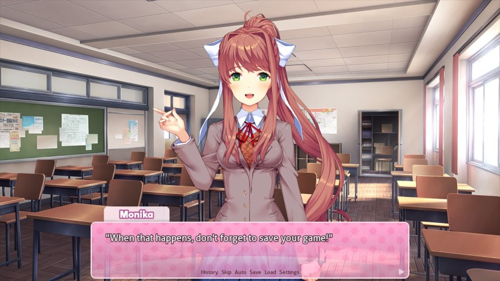
Uh.
: "You never know when you might change your mind...or when something unexpected may happen! Wait...is this tip even about writing? What am I even talking about? Ahaha!": "...That's my advice for today! Thanks for listening~"Well, you're the boss, Monika.
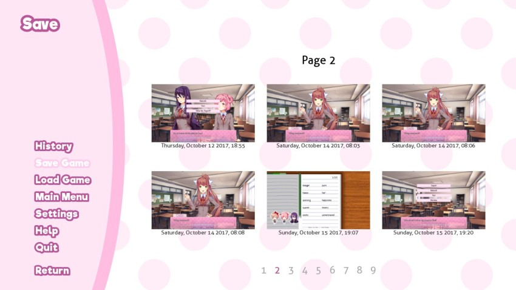
Not that I really need the reminder
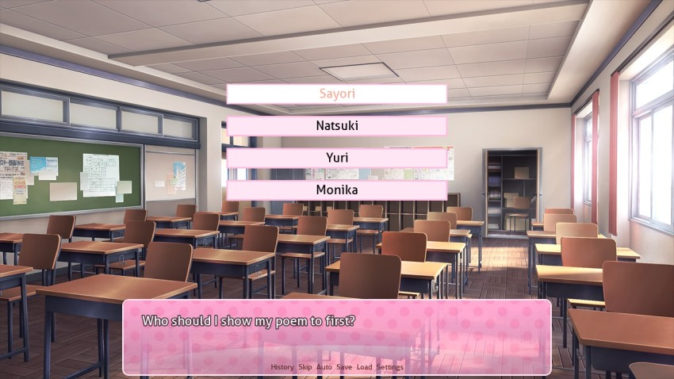
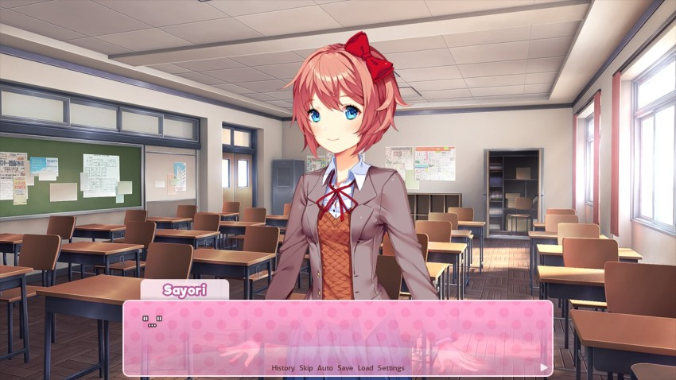
 : "Ooh! I like this one, Mitayo! It has some nice feelings in it~": Ah, I'm glad. So it's at least better than yesterday's.": "Uh-huh!": Maybe I'm getting better at this, then."
: "Ooh! I like this one, Mitayo! It has some nice feelings in it~": Ah, I'm glad. So it's at least better than yesterday's.": "Uh-huh!": Maybe I'm getting better at this, then."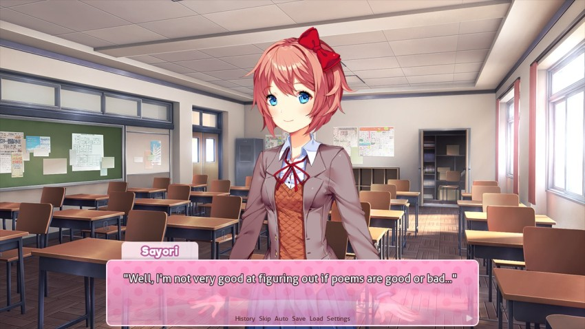
: "But that's why I just go by my heart~ if it makes me feel things, then it must be a good poem!"I'm not sure that's exactly how it works...
That is absolutely how it works, at least from an artistic sense. 'Good' is, of course, relative - maybe 'effective' would be a better description.
...Then again, I guess conveying feelings is a pretty important part of this whole thing.
: Yeah, maybe...honestly, I don't even know what kind of writing you like in the first place.": "Yeah! Me neither!": Ugh...why don't you at least try giving it some thought?": "Aww, you want to write something for me? That's so sweet~"Almost no one is choosing your words, Sayori. Don't give us too much credit.
: Yeah, right. But you're always thinking about other people. You need to think about yourself once in a while. If you don't, you might end up getting hurt at some point." : "Well...I don't really know what you mean, but I'll try to keep it in mind!": Well, whatever...": "Anyway, let's see...Hmm...I guess I like...happy poems~ wait, sometimes I like sad poems too...sometimes a little bit of both...there's a word for that, right...? What's the word I'm looking for...bittersweet! Yeah! I like things that are happy and things that are sad.": Happy and sad? I can't see you liking something sad, Sayori...": "Well...I like happy the most! But sometimes when you have a little raincloud in your head...a sad poem can help give the raincloud a little hug...and make a nice happy rainbow!"
: "Well...I don't really know what you mean, but I'll try to keep it in mind!": Well, whatever...": "Anyway, let's see...Hmm...I guess I like...happy poems~ wait, sometimes I like sad poems too...sometimes a little bit of both...there's a word for that, right...? What's the word I'm looking for...bittersweet! Yeah! I like things that are happy and things that are sad.": Happy and sad? I can't see you liking something sad, Sayori...": "Well...I like happy the most! But sometimes when you have a little raincloud in your head...a sad poem can help give the raincloud a little hug...and make a nice happy rainbow!" I really do love Sayori. All of the girls have their own personality quirks that make them interesting, but Sayori really is something special.: ...Sayori, that's unexpectedly poetic.": "Eh? It is?"
I really do love Sayori. All of the girls have their own personality quirks that make them interesting, but Sayori really is something special.: ...Sayori, that's unexpectedly poetic.": "Eh? It is?"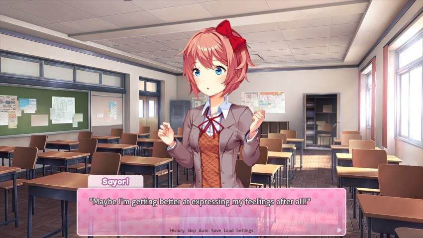
: "Thanks, Mitayo! I should go write that down, then~. You can read my poem now, okay?"BGM: Okay, Everyone! (Sayori)
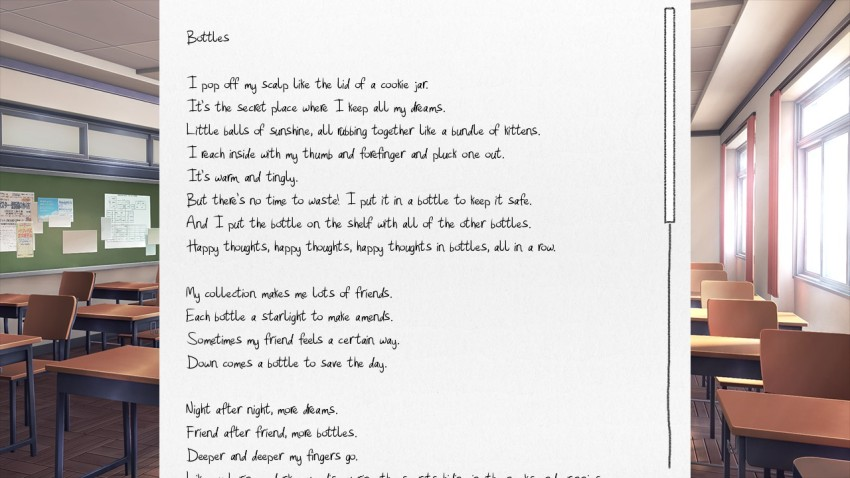
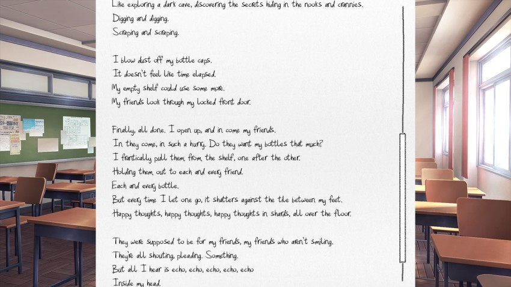
Oh God, they're all long now.
quote:
Bottles
I pop off my scalp like the lid of a cookie jar.
It's the secret place where I keep all my dreams.
Little balls of sunshine, all rubbing together like a bundle of kittens.
I reach inside with my thumb and forefinger and pluck one out.
It's warm and tingly.
But there's no time to waste! I put it in a bottle to keep it safe.
And I put the bottle on the shelf with all of the other bottles.
Happy thoughts, happy thoughts, happy thoughts in bottles, all in a row.
My collection makes me lots of friends.
Each bottle a starlight to make amends.
Sometimes my friend feels a certain way.
Down comes a bottle to save the day.
Night after night, more dreams.
Friend after friend, more bottles.
Deeper and deeper my fingers go.
Like exploring a dark cave, discovering the secrets hiding in the nooks and crannies.
Digging and digging.
Scraping and scraping.
I blow dust off my bottle caps.
It doesn't feel like time elapsed.
My empty shelf could use some more.
My friends look through my locked front door.
Finally, all done. I open up, and in come my friends.
In they come, in such a hurry. Do they want my bottles that much?
I frantically pull them from the shelf, one after the other.
Holding them out to each and every friend.
Each and every bottle.
But every time I let one go, it shatters against the tile between my feet.
Happy thoughts, happy thoughts, happy thoughts in shards, all over the floor.
They were supposed to be for my friends, my friends who aren't smiling.
They're all shouting, pleading. Something.
But all I hear is echo, echo, echo, echo, echo
Inside my head.
Poem impressions: Good Lord, this one's super long. When I first played through this, I didn't pay much attention to the poems themselves since, as previously mentioned, I'm not a huge poetry fan. Now that I'm actually paying attention, these poems are more than just prose on a page. That being said - I like this one too. Sayori's are always good, but this one gives a good message while still sticking to the formula she likes so much.
BGM: Okay, Everyone!
: Holy crap...Sayori, did you really write this?": "Of course I did! Didn't I tell you yesterday I was gonna write the best poem ever?": Yeah, but...I mean, I didn't expect something like this, coming from you.""That's what you SAID, but I didn't believe you even a little bit."
: "Monika taught me a whole lot! And I've been really in touch with my feelings recently...": I see that...it's almost kind of creepy."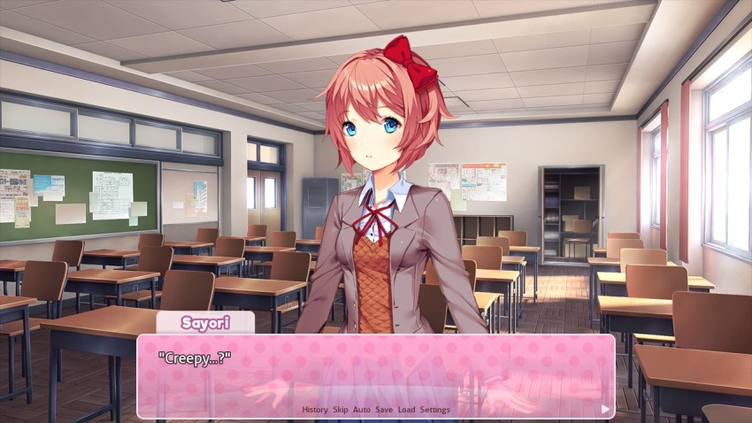
: Well, not exactly...maybe because I'm so used to you being cheerful...Well, never mind. I'm thinking too hard about it. The point is, it came out good, so you should be proud of it.": "Aw, thanks~ I feel like...I feel like I was meant to express myself this way. It even helps me understand my own feelings a little bit better...writing is like magic!"Writing is one of the best ways to express yourself, in my humble opinion.
: You've gotten pretty passionate about this, huh? I hope you keep it up.": "Yeah! Writing's the best! I'm gonna keep writing until I die!"That's the spirit!
: Ahaha...don't get ahead of yourself."Sayori's always had a habit of getting obsessed with something, before dropping it no more than a week later. I wonder if this is one of those times? But seeing the passion in her eyes makes it hard for me to be pessimistic."
BGM: Ohayou Sayori!
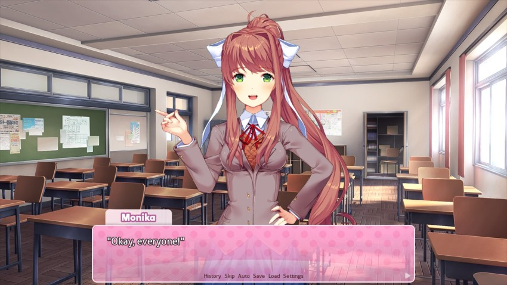
: "We're all done reading each other's poems, right? I have something extra planned today, so if everyone could come sit at the front of the room...": "Is this about the festival?"I don't remember whether or not the festival has been mentioned more than just in passing by this point, but it's about to become a major focal point.
: "Well, sort of~": "Ugh. Do we really have to do something for the festival? It's not like we can put together anything good in just a few days. We'll just end up embarrassing ourselves instead of getting any new members.": "That's a concern of mine as well. I don't really do well with last-minute preparations..."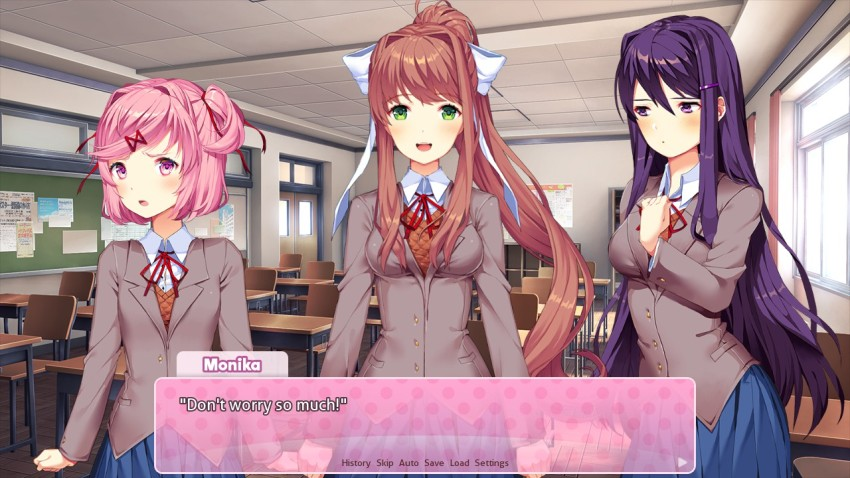
: "We're going to keep it simple, okay? We won't need much more than a few decorations. Sayori has been working on posters, and I've designed some pamphlets we can give out during the event.": Okay, that's great and all...but that doesn't tell us what we're actually going to be doing for the event.": "Ah, sorry! I thought you heard about it already. We're going to be performing!"Fun fact: the Sayori path learns about this early.
: "Performing?": "P...um, Monika...": "Yeah! We're going to be having a poetry performance. Each of us are going to choose a poem to recite during the event. But the cool part is, we're also going to let anyone else come up and recite poems too!": "Sayori's putting it on all the posters in case anyone wants to prepare ahead of time."Sayori, who's been coloring a poster, holds it up for us to see.
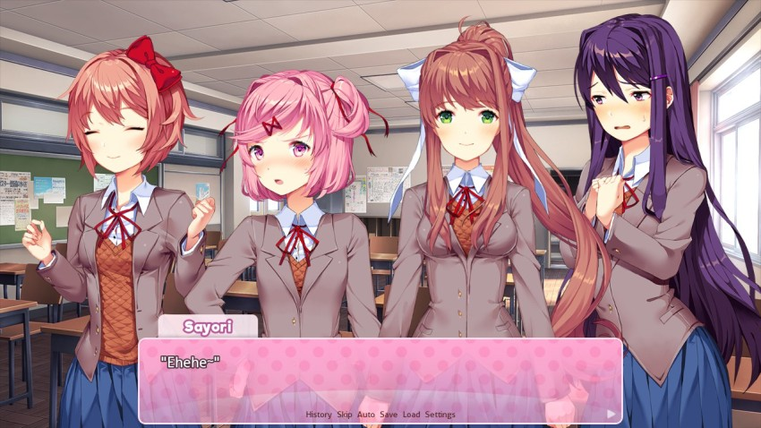
: "Are you kidding me, Monika? You didn't...you didn't already start putting those posters up, did you?": "Eh? Well, I did...do you really think it's that bad of an idea...?": "Well, no. It's not a bad idea. But I didn't sign up for this, you know! There is no way I'm going to be performing in front of a group of people like that!"This sounds like a terrible idea on a multitude of levels.
: "I...I agree with Natsuki! I could never...in my life...do something like that..."Imagining it, Yuri shakes her head in fear.
: "Guys..."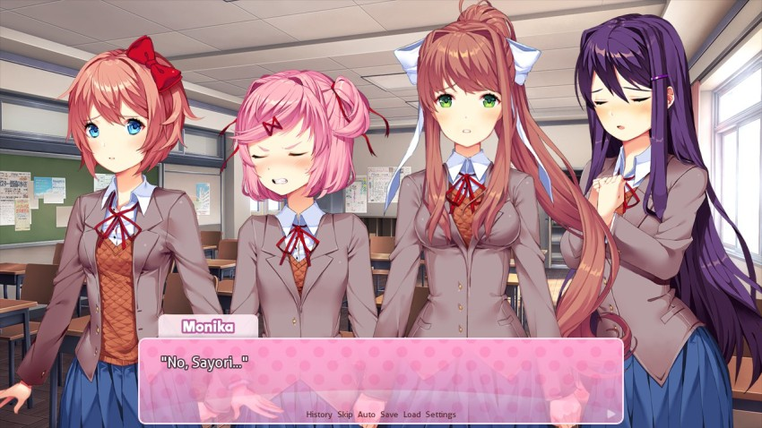
: "I understand where they're coming from. Remember that Natsuki and Yuri have never shared their poems with anyone until just a couple days ago...it's a lot to ask for them to recite their poems out loud to a whole room full of people. I guess I kind of overlooked that. So, I'm sorry.": "...": "...But! I still think we should give it our best! We're the only ones responsible for the fate of this club. If we start the event and each put on a good performance...then it will inspire others to do the same! And the more people who perform, the better we'll be able to show everyone what literature is all about!": "Yeah! It's about expressing your feelings...being intimate with yourself...finding new horizons...and having fun!": "That's right! And it's those reasons that we're all in this club today. Don't you want to share that with others? To inspire them to find the same feelings that brought you here in the first place? I know you do. I know we all do. And if all it takes is standing in front of the room for two minutes and reciting a poem..."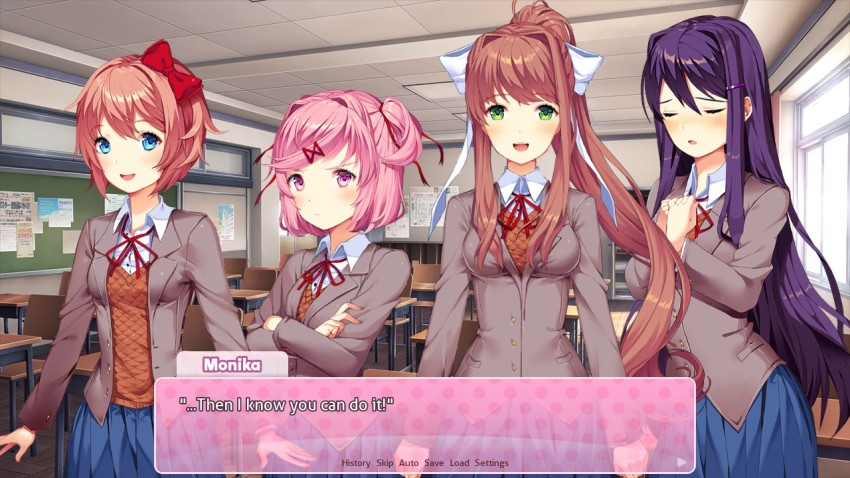
Stage fright is not really something you can get over on a whim, Monika.
: "...": "..."Natsuki and Yuri remain silent. Sayori looks worried. I guess that leaves me no choice...
: I agree...I don't think it's too much to ask. I think that Sayori and Monika have been trying really hard to get new members. The least we can do is help them out a little bit.": "Well...maybe, but..."It looks like Natsuki doesn't have any arguments left.
: "Uu...okay, fine! I guess I'll just have to get it over with.": "Alright~!": "Phew...thanks, Natsuki. What about you, Yuri...?"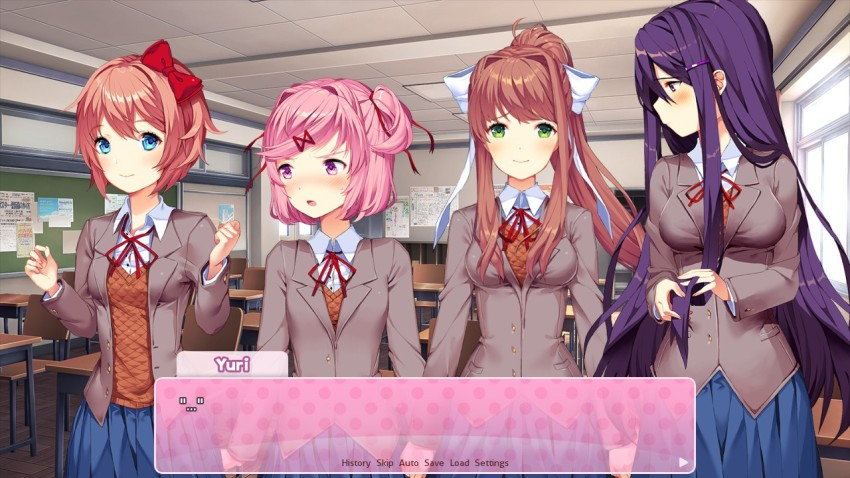
Yuri dejectedly glances around at everyone else's expectant faces.
: "Sigh...I-I guess I don't really have a choice...": "Ahaha! That's everyone! You're the best, Yuri~"The fact that they're willing to actually go through with this shows their dedication to the club. It's impressive and a little touching to say the least.
: "This club is seriously going to be the death of me...": "Oh gosh...you'll be fine, Yuri. But anyway...let's move onto the main event! I want each of you to choose a poem of yours."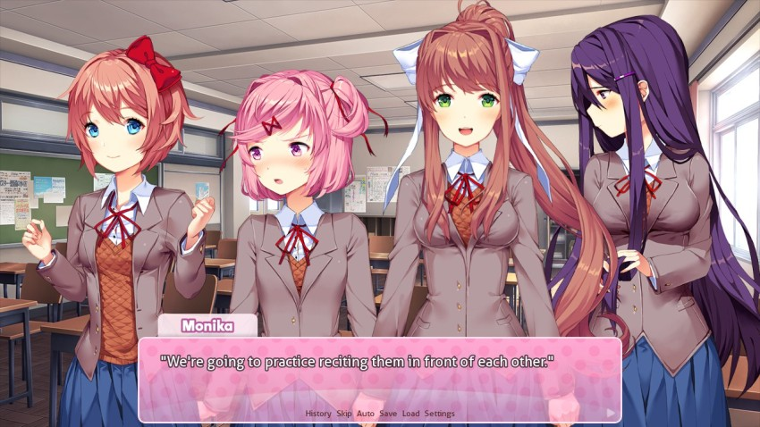
: "N-N-No way!!": "Monika...! This is too sudden...!": "Well, if you can't recite your poem in front of the club, how do you expect to do it in front of strangers?"This is a very good point.
: "Oh no...": "Don't worry. I'll start off to help everyone feel a little more comfortable.": "Can I go next??": "Ahaha. Of course. Now, let's see..."Monika flips through her notebook to the specific poem she has in mind for herself. She then stands behind the podium.
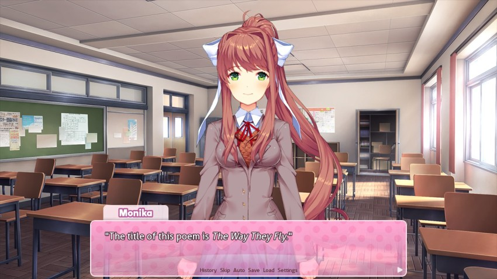
: "Ahem..."Monika begins reciting her poem. Her clear, confident voice fills the room. More than that, her inflection is pristine. She knows exactly how to apply emotion behind each line she recites, bringing the words to life. Is this something she's done before, or is she simply a natural?
She's supposed to be super popular. I would assume she's had plenty of experience being the center of attention.
I glance around me. Everyone has their eyes on Monika. Sayori looks amazed. Yuri has an intense expression on her face that I don't understand. Finally, Monika finishes the recitation. The four of us applaud. Monika takes a breath and smiles.
: "That...that was so good, Monika!": "Ahaha, thank you very much. I was just hoping to set a good example. Are you ready to go next, Sayori?"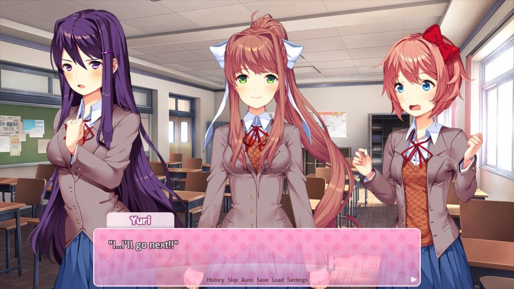
: "Uwah! Yuri's fired up all of a sudden!"Yuri has a firm "let's get this over with attitude" that I can fully get behind.
Yuri clutches a sheet of paper between her hands and stands up. Keeping her head down, she walks quickly over to the podium.
: "This poem is called--!"Yuri anxiously glances at each of us.
: "You can do it, Yuri..."Yuri's voice shakes as she starts reading the poem. Just a moment ago, she practically refused to do this. Why is she suddenly putting in so much effort? As Yuri gets past the first couple of lines, her voice changes. It's almost like what happens when Yuri gets absorbed into her books. Her quivering words transform into the sharp syllables of a fierce and confident woman.
The poem is full of twists and turns in its structure that she enunciates with perfect timing. This must be a rare glimpse into the whirling fire Yuri keeps concealed inside her head...! Suddenly, she's finished. Everyone is stunned. Yuri snaps back into reality and glances around her, as if she bewildered even herself.
: "I..."...It's up to me to save this situation. I'm the first to start applauding. Everyone joins me afterward, and we give Yuri the recognition she deserves. It's not that we didn't want to applaud for her. But we were caught so off-guard that we must have forgotten. As we applaud, Yuri holds the poem to her chest and rushes back into her seat.
: "Yuri, that was really good. Thank you for sharing.": "..."Looks like Yuri is down for the count...
A for effort, though. Good job, kid.
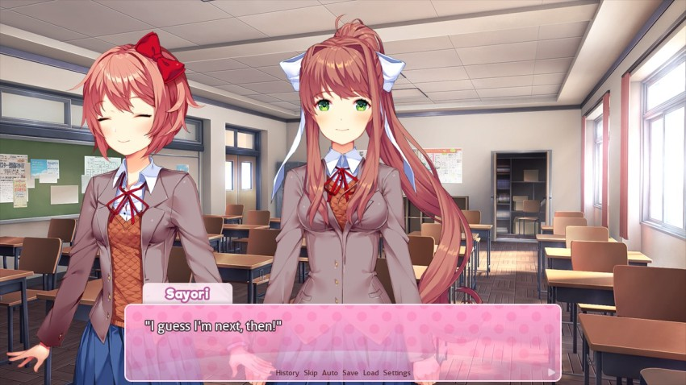
Sayori hops out of her chair and cheerfully walks to the podium.
: "This one's called...My Meadow. Ah...ahaha!": "Sorry, I giggled...ehehe...": Sayori...": "It's a lot harder than I thought! How did you guys do it so easily?": "Ah...try not to think of it like you're reciting to other people. Imagine you're reciting it to yourself, like in front of a mirror, or in your own head. It's your poem, so it'll come out the best that way.": "I see, I see...okay, then..."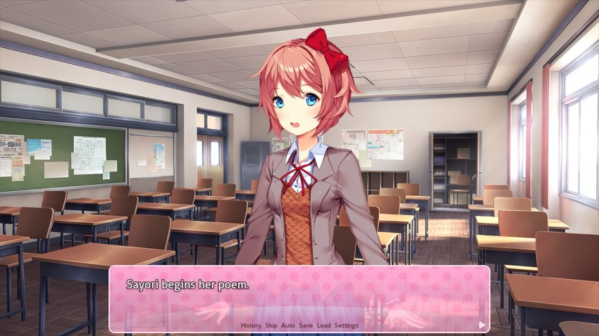
Somehow, it feels like her soft voice was made as a perfect match. The poem isn't aimlessly cheery like Sayori is. It's serene and bittersweet. If I were to read this on paper, I probably wouldn't think much of it...but hearing it come from Sayori's voice almost gives it a whole new meaning. Maybe this is what Sayori meant when she said she likes my poems. It's like I get to reach more deeply into someone I thought I knew through and through.
Sayori finishes, and we applaud.
: "I did it~!" : Good job, Sayori.": "Ehehe, even Mitayo liked it. I guess that's a good sign~": What does that even mean...?"
: Good job, Sayori.": "Ehehe, even Mitayo liked it. I guess that's a good sign~": What does that even mean...?"Yeah, I thought we've even told her that we've liked everything she's written so far.
: "It came out nicely, Sayori. The atmosphere of the poem fits you really nicely. But it might be that other poems wouldn't work quite as well with that kind of delivery...": "Eh? I don't really understand...": "In other words, I've seen poems of yours where that sort of gentle delivery wouldn't work as well. They might need a little more force behind them, depending on what you're reading...": "Oh, I know what you mean! That's...well, I've been practicing that kind of thing...it's just embarrassing to do in front of everyone...ehehe...": "Then next time, I'm going to make you pick a poem that challenges you a little more. We don't have much time before the festival, you know?": "Okaaaaay.": "Now, who's next...? Natsuki?"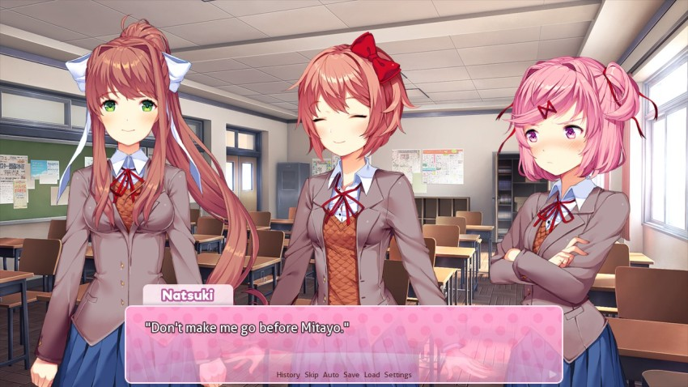
: "It's not like I can compare to you guys, anyway...might as well let Mitayo lower everyone's standards a little before I have to do it."As spicy as ever. She hates our poems on this route and, by proxy, us - but the funny thing is that this particular line is non-changing. Even if she likes us, she still insults us.
: "Natsuki...": It's fine, it's fine. I might as well get it over with. But it's not like I have much of a selection of what to read...I'll just have to go with what I wrote for today."I stand up and step in front of the podium. Everyone has their eyes on me, making me feel terribly awkward. I recite my poem. Since I'm not exactly confident in my own writing, it's hard to put energy into it. Despite that, once I finish, I receive applause anyway.
: Sorry I'm not really as good as everyone else...": "Don't worry about it so much. I think it's less about your abilities, and more about your lack of confidence in your writing. That's something that'll improve over time, though.": Yeah... Maybe."Look, I only write to impress the ladies.
: "Alright, then! That just leaves you, Natsuki.": "Yeah, yeah. I'm going."Natsuki begrudgingly gets out of her seat and makes her way to the podium.
: "The poem is called...it's called...": "W-Why are you all looking at me?!": "Because you're presenting...": "Hmph...Natsuki takes a breath. Once she starts reciting the poem, her sour attitude disappears a little. While she's still a little unenthused, her poem has a rhythm and rhyme to it. It's Natsuki's trademark style, and it works surprisingly well when spoken aloud. The words feel like they bounce up and down, as if giving life to the poem.
Natsuki finishes, and everyone applauds. She huffs back to her seat.
: "That wasn't so bad, was it?": "Easy for you to say...you'd better not make me do that again.": "Ah, well...do you at least feel prepared enough to recite a poem in front of other people?": "I mean, doing it in front of other people will be way easier! I can put on whatever face I want for other people. But when it's just my friends...it's just...embarrassing.": "That's a surprise, Natsuki...I think it would be the other way around for me."Yeah, that seems...off.
: "Well, that's just how it is, so...": "Well, I guess in that case...you won't have much to worry about for the festival. 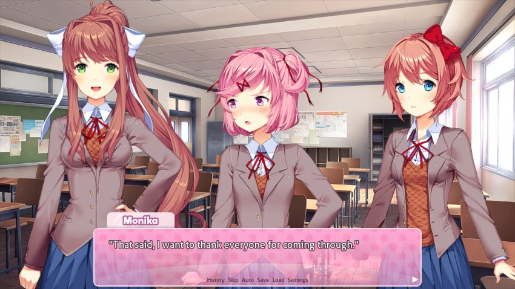
: "It might be hard, but I hope that you all have an idea of what it's like now. Make sure you pick a poem and get enough practice before the festival, okay? I'll be making pamphlets, so let me know ahead of time what you'll be reciting.": Jeez...I should probably find some other poem to recite instead.": "That's fine, too! It doesn't have to be your own. I'm already pleasantly surprised that you're putting in all this effort for the club. It makes me really happy."I'm just going to read some song lyrics instead. Is that cool?
: Ah... Yeah, no problem..."BGM: Daijoubu!
: "Okay, everyone!": "I think that's about it for today. I know the festival is coming up, but let's try to write poems for tomorrow, as well. It's been working out really nicely so far, so I'd like to continue that. As for the festival, we'll finish planning tomorrow, and then we'll have the weekend to prepare. Monday's the big day!": "I can't wait~!: "I can do this... I can do this...": Alright--"I stand up. There's no way I'll be able to find the same enthusiasm as Sayori and Monika, but I'll do my best to get through it. If it's for the sake of the club...and impressing Monika...then I'll have to do my best.
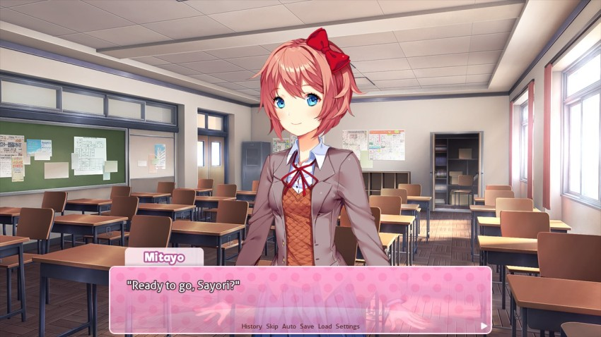
: "Yep!": "Look at you two, always going home together like that.": "It's kind of adorable, isn't it?": "Ehehe~": Jeez, guys...don't make such a big deal out of it."We literally live right next to each other.
: "It must be a little nice, though...": Well...ah..."How am I supposed to respond to that?
: "It's okay, Mitayo, you don't have to say it.": ...Whatever. Let's go already."I walk home with Sayori once more. Even though it's only been a few days, a lot of things have already changed. But today, Sayori is being a little quieter than usual on the way home.
: Hey, Sayori..."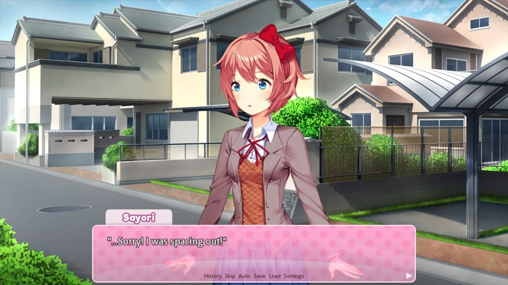
: Ah, no wonder...": "Um...I was...thinking about something from earlier. I like how we get to...I-I mean..."Sayori fumbles with her words.
: "So...let's just say that one day, Yuri asked to walk home with you...": Huh?!": "What would you do?"...we're neighbors, Sayori. We have to go home the same way. Why does everyone keep forgetting that?
: What kind of question is that...? You're kind of putting me on the spot here...": "Ehehe..."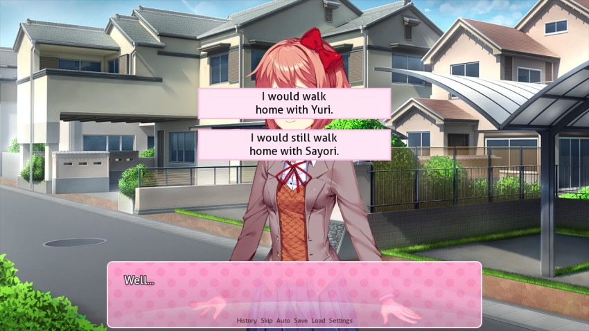
Alright guys, DOUBLE CHOICE TIME!
1) Would we walk home with Yuri if she asked, or would we continue to walk home with Sayori?
2) Since the next poem vote is literally right after this, what word grouping do you want to go with? Once again, double votes for sensible haikus!
This is the last normal poem vote, so make it count!
quote:
GROUP A
Happiness, sadness, death, tragedy, alone, love, adventure, sweet, excitement, fireworks, romance, tears, depression, heart, marriage, passion, childhood, fun, color, hope, friends, family, party, vacation, lazy, daydream, pain, holiday, bed, feather, shame, fear, warm, flower, comfort, dance, sing, cry, laugh, dark, sunny, raincloud, calm, silly, flying, wonderful, unrequited, rose, together, promise, charm, beauty, cheer, smile, broken, precious, prayer, clumsy, forgive, nature, ocean, dazzle, special, music, lucky, misfortune, loud, peaceful, joy, sunset, fireflies, rainbow, hurt, play, sparkle, scars, empty, amazing, grief, embrace, extraordinary, awesome, defeat, hopeless, misery, treasure, bliss, memories
GROUP B
Cute, fluffy, pure, candy, shopping, puppy, kitty, clouds, lipstick, parfait, strawberry, pink, chocolate, heartbeat, kiss, melody, ribbon, jumpy, doki-doki, kawaii, skirt, cheeks, email, sticky, bouncy, shiny, nibble, fantasy, sugar, giggle, marshmallow, hop, skipping, peace, spinning, twirl, lollipop, poof, bubbles, whisper, summer, waterfall, swimsuit, vanilla, headphones, games, socks, hair, playground, nightgown, blanket, milk, pout, anger, papa, valentine, mouse, whistle, boop, bunny, anime, jump
GROUP C
Determination, suicide, imagination, secretive, vitality, existence, effulgent, crimson, whirlwind, afterimage, vertigo, disoriented, essence, ambient, starscape, disarray, contamination, intellectual, analysis, entropy, vivacious, uncanny, incongruent, wrath, heavensent, massacre, philosophy, fickle, tenacious, aura, unstable, inferno, incapable, destiny, infallible, agonizing, variance, uncontrollable, extreme, flee, dream, disaster, vivid, vibrant, question, fester, judgment, cage, explode, pleasure, lust, sensation, climax, electricity, disown, despise, infinite, eternity, time, universe, unending, raindrops, covet, unrestrained, landscape, portrait, journey, meager, anxiety, frightening, horror, melancholy, insight, atone, breathe, captive, desire, graveyard